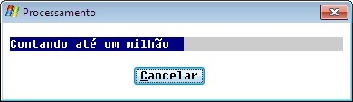

Barra de processo.
ProcessBarr { SHOW
| CLOSE }
[
TITLE título
]
[ MESSAGE mensagem
]
[ QUESTION pergunta
]
[ LINE linha
]
[ COLUMN coluna
]
[ FULL decorrido
EMPTY previsto
]
[ CANCEL;indicador-de-processo-interrompido
]
SHOW
Exibe
ou atualiza a janela.
Título da janela de até 50 caracteres.
Mensagem da barra de progresso de até 46 caracteres.
Frase de até 50 caracteres formando a pergunta a ser feita ao usuário para confirmar a interrupção do processo.
Linha de posicionamento da janela.
Coluna de posicionamento da janela.
Indica o progresso do processo de geração do relatório, pode ser usado quando a quantidade a processar é conhecida.
Indica a quantidade prevista no processamento
Fecha a janela.
indicador-de-processo-interrompido
Variável
que retorna o valor "Y" se o
usuário cancelar o processo.
77
fim
PIC X(001) VALUE SPACE.
88 CANCELED
VALUE "Y".
Esse comando consome recursos consideráveis principalmente
no modo gráfico, portanto deve ser usado com critério
em processos realmente demorados e com intervalos razoáveis.
A
acentuação deve ser codificada com a página de
código 850. Os processadores de tela se encarregam de traduzir
para o codificação apropriada a plataforma de execução:
|
Codificação COBOL |
|
PERFORM VARYING I FROM
1 BY 1 |
|
Efeito no modo gráfico |
|
 |
|
Efeito no modo texto |